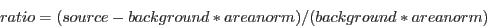

XMM-Newton Science Analysis System
specgroup (specgroup-1.6) [xmmsas_20170112_1337-16.0.0]
Meta Index
/
Home Page
/
Grouping options and examples
/
Statistical grouping
Minimum ratio above background
Defines groups where each one contains a minimum ratio of the source signal to the background counts:

(
2
)
XMM-Newton SOC/SSC -- 2017-01-12